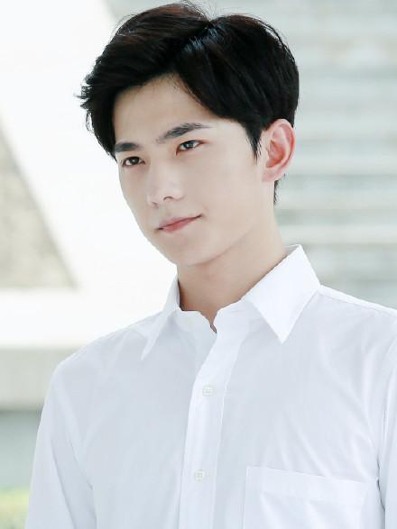
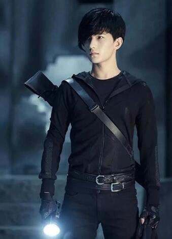
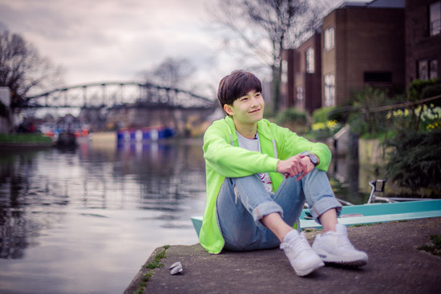

杨洋
杨洋，1991年9月9日出生于上海，籍贯安徽合肥，毕业于中国人民解放军艺术学院2003级舞蹈系，中国内地影视男演员。2008年，因在李少红版《红楼梦》中饰演成年贾宝玉而被观众熟知并正式出道；2010年凭借电视剧《红楼梦》中表现获得年度BQ红人榜“最佳新人奖”；2011年杨洋参演首部电影《建党伟业》；2015年因主演电影《左耳》中双面校草许弋和季播剧《盗墓笔记》中张起灵而获得关注，同年参与录制真人秀节目《花儿与少年第二季》，随后其主演的青春励志剧《旋风少女》取得全国同时段电视剧收视冠军。 ... >>>
基本信息
杨洋，1991年9月9日出生于上海，籍贯安徽合肥，毕业于中国人民解放军艺术学院2003级舞蹈系，中国内地影视男演员。
2008年，因在李少红版《红楼梦》中饰演成年贾宝玉而被观众熟知并正式出道；2010年凭借电视剧《红楼梦》中表现获得年度BQ红人榜“最佳新人奖” ；2011年杨洋参演首部电影《建党伟业》；2015年因主演电影《左耳》中双面校草许弋和季播剧《盗墓笔记》中张起灵而获得关注，同年参与录制真人秀节目《花儿与少年第二季》 ，随后其主演的青春励志剧《旋风少女》取得全国同时段电视剧收视冠军 。
2016年2月7日，杨洋登上央视春晚与佟铁鑫合唱歌曲《父子》[9] ，同年因主演偶像剧《微微一笑很倾城》获得更多关注，随后，由其主演的电影《从你的全世界路过》上映 ，同年，他主演的玄幻剧《武动乾坤》开机拍摄。2017年8月4日，其主演的古装玄幻爱情仙侠电影《三生三世十里桃花》上映 ；同年，他还主演了青春剧《全职高手》
演艺经历
2007年，经典名著翻拍剧《红楼梦》剧组决定从中国人民解放军艺术学院选出15名候选演员，杨洋被选入；后李少红导演亲自挑选，杨洋最终成为《红楼梦》中成年贾宝玉的扮演者。
2010年，《红楼梦》播出，杨洋凭借该剧获得年度BQ红人榜“最佳新人奖”。
2011年，杨洋主演的第二部电视剧《青春旋律》在中国中央电视台一套黄金档播出，杨洋饰演宁浩。6月，杨洋首次参演的电影《建党伟业》正式上映，该片票房突破3亿，杨洋饰演杨开慧的兄长杨开智一角。
2012年3月，杨洋主演的爱情电影《饮食男女：好又好近》上映，这是杨洋的第二部电影，也是宝黛钗继《红楼梦》之后的再次联合出演。9月，杨洋主演的战争剧《战争不相信眼泪》于上海影视频道、江苏电视台等电视台播出，杨洋本色出演小红军杜长友。
2013年，杨洋在简远信的古装历史情感剧《新洛神》中饰演男一号曹植，该角色使杨洋被评为史上最萌曹植。6月，杨洋主演的古装魔幻武侠剧《少年四大名捕》杀青，杨洋饰演谦谦君子无情。7月，杨洋主演的大型江湖传奇抗战剧《武间道》（又名《终极征服》）首播，杨洋扮演男一号白念生并首次挑战打斗、飞檐走壁等戏码。11月，杨洋参加中国首档大型军事题材明星真人秀节目《防务精英之星兵报到》；主演的都市纯爱剧《花开半夏》于湖南卫视周播剧场播出，该剧改编自九夜茴的同名小说，杨洋饰演富二代陆元。12月，杨洋参演电视剧《茧镇奇缘》，饰演黄莫如。
2014年4月29日，因为经纪公司荣信达没有按照双方合约规定给予杨洋应有的合理的事业规划，杨洋与原公司荣信达结束七年的合作关系。7月10日，《小时代之折纸时代》网络首播，杨洋饰演顾里的表弟Neil；7月11日，电视剧《花灯满城》在深圳电视台公共频道《岭南剧场》首播，杨洋饰演陈飞渝。8月，杨洋参演苏有朋执导的处女作电影《左耳》，饰演许弋。9月，杨洋由原著作者南派三叔钦定出演《盗墓笔记》，饰演张起灵。
 2015年1月16日，电影《暴走神探》正式上映。杨洋首度挑战反派角色，饰演一位激进爱国分子詹姆斯吴，通过对角色眼神的诠释以及内心戏的把控，将腹黑霸道的民国军官形象塑造得淋漓尽致，颇受好评。3月17日，古装魔幻武侠剧《少年四大名捕》登陆湖南卫视钻石独播剧场，杨洋饰演无情。4月24日，电影《左耳》正式上映，杨洋饰演双面校草许弋，以高颜值吸引了不少观众走进影院，对角色蜕变的真实演绎亦获得了广泛肯定。4月25日，杨洋参与录制的《花儿与少年第二季》在湖南卫视播出，暖萌七弟全能启航。6月12日，网络剧《盗墓笔记》首播，杨洋饰演张起灵；由于签约经纪人贾世凯辞去欢瑞世纪副总裁的职务，离职欢瑞世纪决定自主创业，杨洋随之与经纪人一起来到贾士凯自主创业公司悦凯娱乐。（杨洋与欢瑞世纪公司从未有过签约经纪关系）。7月7日，《旋风少女》登陆湖南卫视青春进行时剧场首播，杨洋饰演若白。7月13日，杨洋确定出演电视剧《微微一笑很倾城》饰演男主角肖奈。10月29日，杨洋确认出演电影《三生三世十里桃花》，饰演男主角夜华。
2016年1月1日，安徽卫视《国剧盛典》播出，演员杨洋出席并获得“最具全媒体影响力演员”和“年度最受关注演员”两项大奖。1月8日，中国邮政发行的杨洋专属纪念邮品套装在全国范围内发行，纪念邮品套装内含杨洋个性化邮票1版、明信片2枚、纪念封1枚，明信片和纪念封均印有杨洋签名，杨洋成为2016年首位登上中国邮政定制邮票的艺人。1月23日，杨洋作为法国Dior官方唯一正式邀请的中国男星出席2016巴黎时装周Dior Homme2016冬季系列发布秀；参与演出的康师傅贺岁广告微电影《寻年传说》上线播出。1月27日，杨洋现身2016央视春晚彩排现场。2月7日，2016央视春晚中搭档佟铁鑫在春晚节目中化身一对父子，演绎一首催泪的《父子》。2月18日，由张一白执导的《父子》MV开拍，杨洋与佟铁鑫亲切互动。6月20日，华表奖首批嘉宾名单公布，杨洋位列其中。7月11日，V脸社长工作室、OPPO、腾讯视频联合出品，由杨洋主演的微电影《我是你的咩咩phone》上映。9月8日，杨洋发布摇滚单曲《爱是一个疯字》。10月18日下午，苏宁易购在“穿越双十一：城•惠•玩”发布会上表示，杨洋不仅将出任苏宁易购品牌代言人，带领消费者穿越双十一，更将担纲苏宁易购“笑倾城”的城主。11月30日，由杨洋、TFBOYS、关晓彤、邓紫棋、肖央以及王嘉等首度集结在一起，跨界合作录制全新世界艾滋病日推广歌曲《瞳孔里的太阳》首发。
社会活动
公益慈善
2010年5月28日，杨洋作为明星志愿者参与了I Do儿童基金“梦想课堂”计划启动仪式，并于11月23日来到朝阳区育才打工子弟小学，担任四年级体育老师，组织足球PK赛，为孩子们带来了一堂精彩的“梦想课堂”。2010年12月14日，杨洋应邀出席中国扶贫基金会“母婴平安120行动”成立10周年慈善晚宴，并成为该项目的“爱心明星”，与多位明星一起参与到救助贫困母婴的行动当中。2010年12月26日，杨洋出席了“奥丽侬·郁金香”公益行动的启动仪式。该活动旨在倡导关爱女性、防治乳腺疾病。作为活动代言人，杨洋突破尺度，首度“义裸”出演公益大片。
2015年7月6日，杨洋参与录制的节水公益短片发布，短片中杨洋传授了各种节水小妙招，呼吁大家一起节约用水。2015年9月9日，在“超自在2015年杨洋24岁生日粉丝见面会”上，预调鸡尾酒行业的领导品牌RIO在现场宣布杨洋和郭采洁成为“RIO反对未成年人饮酒公益行动的形象大使”，倡导未成年人不要饮酒。2015年9月23日，杨洋出席2015芭莎明星慈善夜，并在慈善拍卖环节送上自己亲手做的月饼，助阵慈善。2015年9月30日，杨洋出席2015百度贴吧粉丝节。中国青少年发展基金会向杨洋颁发公益捐赠证书，以此感谢杨洋和杨洋粉丝团对“五元新校舍”的大力支持，并将广西河池市大化县江南乡尝梅村卡苏教学点命名为“杨洋希望小学”。2015年10月16日，杨洋领衔Bazaar时尚拍，12小时，24万人围观，1338次出价，92件拍品，拍卖总额100万人民币，其中，杨洋为公益拿出的签名版@Rockioo Watch以8.6897万收官。
2016年2月1日，杨洋通过微博在“一起9加1”项目中捐款成功，该活动由@微公益 @中国互联网发展基金会发起，呼吁1人捐¥100，9个人就能帮到1户贫困家庭过好年。2016年12月12日，第四季芭莎#公益星设计#杨洋参与设计的“爱·爱情”主题饰品开卖。
2017年8月10日，杨洋向九寨震区捐款50万。
出席活动
北京时间2016年4月21日17时，希腊时间2016年4月21日12时，2016年里约奥运会圣火采集仪式在希腊雅典举行，杨洋与中国航海家郭川和郭采洁等火炬手出现在圣火采集仪式现场观摩奥运圣火采集仪式。希腊时间2016年4月22日，杨洋作为2016年里约奥运会圣火传递活动中首位中国火炬手在希腊Rio–Antirrio bridge顺利完成圣火接力。2016年4月26日，世界读书日， 杨洋与人民日报客户端“夜读”栏目合作朗读作品《杨洋：人生需要你以热爱相待》。2016年5月8日，第二十三届北京大学生电影节宣传大使杨洋作为“ 梦想同行者”出席大影节闭幕式。
2017年2月19日，杨洋蜡像入驻上海杜莎夫人蜡像馆。